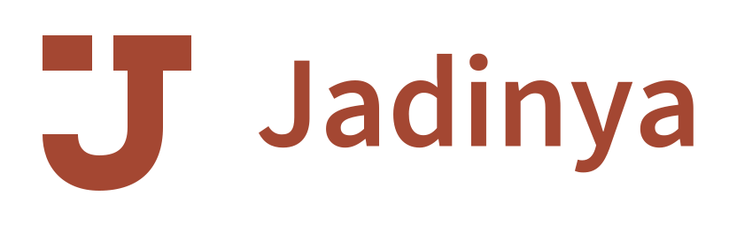
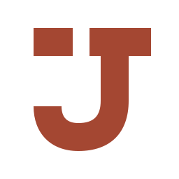
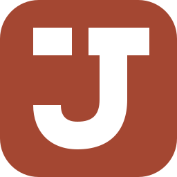

OPSI 01
Jejak Jadi
Satu pesan. Sebuah hasil.


Huruf J membawa gerak turun lalu berbalik menjadi pijakan yang mantap. Satu keping terpisah di kiri atas menandai masukan awal; bentuk utamanya menyimpan gerak menuju hasil.
Hubungan produkNama Jadinya, prompt kunci pada projects, dan urutan prompt–hasil pada project_sessions.
Uji ukuran aktual
Kanvas CSS 1:1. Bentuk sama pada semua ukuran.

Dalam pemakaian

App icon / avatar
Bidang rounded square
MOCKUP HEADER · BUKAN APLIKASI AKTIF
Sudah jadi?
Ceritain di sini.
Tanpa bantuan warna

Palet identitas
#A44732
#292523
#E5B786
Warna padat; accent untuk bidang pendukung. Source Sans 3 / SIL OFL 1.1.
Catatan kritis
Monogram J merupakan wilayah yang padat; keping terpisah perlu dipertahankan agar tidak menjadi J biasa.
Secara kategori berdekatan dengan monogram J pada banyak merek. Tidak mengidentifikasi satu merek tertentu dari inspeksi ini; pencarian kemiripan belum dilakukan.